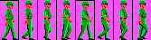
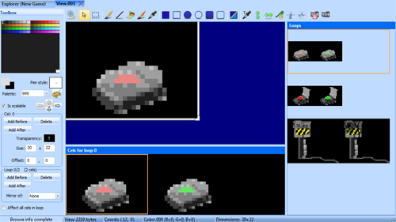

View Editor¶
Views are used for all the graphical elements in the game: Actors, Props, icons, window borders and more. Because they are so important, there is a significant amount of functionality devoted to them in SCICompanion.
A View consists of one or more loops, each with one or more cels.
A loop is commonly used for an animation sequence, such as the following walking animation:

In the case of a character, different loops within the same view are often used for different directions the character is facing.
The View Editor layout¶
In the center is the currently selected cel on which you draw.
On the bottom are the cels that are in the currently selected loop. To the right is a list of loops that are in the view. Clicking on any of these will set the currently selected loop or cel (you can also use the arrow keys to do this). You can rearrange loops and cels within the view by clicking and dragging them to a new position.
The Toolbox pane shows the palette and other controls used to manage the view. Finally, on the top are the drawing controls common to views, fonts and cursors.
Drawing on the main view pane¶
Please read the section on drawing tools for a full description of what each tool does.
Selection and resizing¶
Please read the section on selection and resizing.
Palettes¶
The current foreground and background drawing colors are shown in the Toolbox pane. Left-clicking or Right-clicking on a color in the palette will set the foreground or background colors respectively. The currently selected colors are highlighted in the palette, along with a ‘T’ marking this cel’s transparent color.
A VGA palette on the left, and the EGA palette on the right.
EGA views use a fixed 16-color palette.
VGA views use a custom 256-color palette. When you create a new VGA view, there is no
palette associated with it by default - it will just use palette 999 (the global palette). If you want a view to have a specific
palette associated with it, you can do so by clicking on the edit palette button  . You can remove an embedded palette
using View->Remove Embedded Palette.
. You can remove an embedded palette
using View->Remove Embedded Palette.
Views most commonly just use the “fixed” colors of a palette. In the SCI1.1 template game, these are the lower 64 colors of palette 999. This lets several views be on screen at once without any palette conflicts.
By default, the View Editor draws a view with its embedded palette or palette 999. You can use any palette in the game to render the view by choosing one from the dropdown list in the Toolbox pane.
If you want a view to use a different palette, but attempt to keep its current colors as much as possible, you can use View->Remap Palette.
Adding and removing cels and loops¶
The Toolbox pane has buttons for adding and removing cels and loops to/from the current view. A newly-created cel will be a copy of the currently selected cel (you can change this so that it is filled with the transparent color by default in Tools->Preferences). You can also delete the current cel by pressing the DELETE key.
If you remove all cels in a loop, that loop will be deleted. You can not remove all loops - a view must have at least one loop with one cel.
Importing images into an SCI view¶
Images and image sequences (or an animated .gif) can be imported into both EGA and VGA views (and cursors). Image formats supported include jpg, png, tiff, bmp and gif.
To import a single image to replace the current cel, use the Import Image button on the drawing tool bar  , or in the View menu. To import multiple images
(or an animated .gif) and replace the entire current loop, use the Import Images button on the tool bar
, or in the View menu. To import multiple images
(or an animated .gif) and replace the entire current loop, use the Import Images button on the tool bar  , or in the View menu.
, or in the View menu.
In either case, you are first shown a file dialog that lets you choose one or more images. Once you’ve made your selection, the Import Images dialog is presented:

The Import Images dialog offers full control over how these images are converted to the restricted palette of SCI. In particular, this includes control over:
- Which palette indices to use
- Whether to map to the current palette or generate a new palette
- The type of color matching to use
- Optional dithering for limited color palettes or images with an alpha channel
- Modifications to brightness, contrast, saturation and hue of the input image
If you’ve selected multiple images, they will be arranged in alphabetical order. The original image(s) are displayed on the left, and the processed image(s) on the right.
Palettes¶
You have three options for palettes in the Import Images dialog:
- You can have SCICompanion generate a palette automatically, replacing the selected colors of the existing palette of the view. This is only available for VGA views.
- You can try to map colors to selected colors of the existing palette (using either RGB or CCIR color matching)
- You can use the palette included in the image file, if available (for instance, .gif files may include a palette). This is only available for VGA views.
In either of these cases, you have control over which indices are affected in the existing palette for this view. For VGA views, by default the “fixed” colors specified in palette 999 are selected, and option 2 above is the default. This is the most common use case, as most views generally only use the fixed colors in palette 999.
If you want to customize which indices are used, you can check or uncheck the Use global palette entries checkbox to quickly control which palette indices are used, or you can manually select them in the palette and press the refresh button.
Note that if you change the palette (any option other than mapping to the existing palette), it will change the palette for the entire view, not just the cel or loop you are replacing.
Transparency¶
By default, the current transparent color is used for transparent parts of the image, but you can change this. For images with 8-bit alpha, you can set the alpha threshold used to determine if a pixel is opaque or transparent (by default this is set to 128).
Dithering¶
Due to the limited SCI palettes (especially in EGA), you may want to enable dithering.

A comparison of an image imported into a view using the default VGA palette for the template game.
In addition to color dithering, you can also have the alpha channel dithered. If you choose to enable alpha dithering, you have a number of options for the dither algorithm. An ordered dither is recommended for moving images, as the dithering matrix will then be stable from frame to frame.

An image sequence from a particle effects software, rendered out to an image sequence and imported into a VGA view in SCICompanion using alpha dithering.

A flame sequence imported into a 16-color EGA view using color dithering.
Image adjustments¶
Adjustments for brightness, contrast, saturation and hue are provided. If the imported image is a tough match for the current palette, adjusting these parameters might help.
Pasting an image into a view cel¶
You can also just paste an image on the clipboard directly into a view cel, and it will appear in a selection rect that you can move around. Double-click to commit the selection. This offers little control on how the color mapping is done, however. If you are pasting within a view, or from one view to another, you can also use Edit->Paste Transparent, which will retain the transparency of the source view cel.

Pasting into a view
For more control, you can choose View->Paste Special, or CTRL-B. This will also paste the clipboard image into a selection rectangle. However, it will first bring up the Import Image dialog to give you more control over the final result.
Mirrors¶
Often the loops for different directions a character faces are just mirror images of one another. In the Toolbox pane you can use the Mirror of combo box to indicate that the current loop is the mirror image of another. Any manipulation or editing of one loop will take immediate effect on the other loop.
Transparency¶
Each cel can have one palette index marked as its transparent color. When it is drawn in-game, this will let the background show through. The transparent color
can be set with the transparent eyedropped tool  , or by choosing a color explicitly in the Toolbox pane.
, or by choosing a color explicitly in the Toolbox pane.
Offset¶
By default, the offset of a cel is (0, 0). Since views are commonly used to draw in-game characters, and the location of a character is most
closely associated with his or her feet, an offset of (0, 0) corresponds to the bottom center of the cel. You can change a cel’s manually in
the Toolbox pane, or using the placement  drawing tool.
drawing tool.
Affect all cels¶
At the bottom of the Toolbox pane is a checkbox for Affect all cels in loop. This lets you manipulate draw on all cels in the current loop at once (even though only the current cel is shown in the canvas). This makes it easy to flood fill an area common to all cels, resize all cels at once, or perform a mass replace of one color with another.
To map the current pixel location to the pixel location in another cel, SCICompanion uses the offset (or placement) values for the cel. These form the origin.
Color shifting¶
Often you’ll want to make differently colored versions of a view (for example, to change the clothing colors of an character) using the same palette. SCICompanion makes this easy by allowing you to shift colors in the current cel, loop or entire view.
View->Shift Colors will bring up the Color Shifter dialog. Dots are shown on the palette indices that are used by the current cel, loop or view.
You can select a range of colors in the palette and move them around as a group with the arrow keys.
Selecting the reddish pixels and “moving” them so they are in the yellow part of the palette.
Scaleable views¶
Important
This section applies to SCI 1.1 only
The Toolbox lets you specify whether a view is scaleable or not. A scaleable views can be reduced in size in-game to give the effect of a character walking off into the distance.
In Code¶
One place view resource numbers are used is when you declare :class`View`, Prop or Actor instances.
(instance electricPost of Prop
(properties
view 3
loop 2
x 136
y 137
signal ignAct
noun N_ELECTRICPOST
)
)
Or when you add an icon to dialog:
(Print:
// Show view 234 (loop 1 and cel 0) at (0, 0):
addIcon(234 1 3 0 0)
init()
)
Or when setting up the ego:
// Tell the ego to use view 53, loop 3.
SetUpEgo(53 3)
See also: DrawCel(), SetUpEgo().